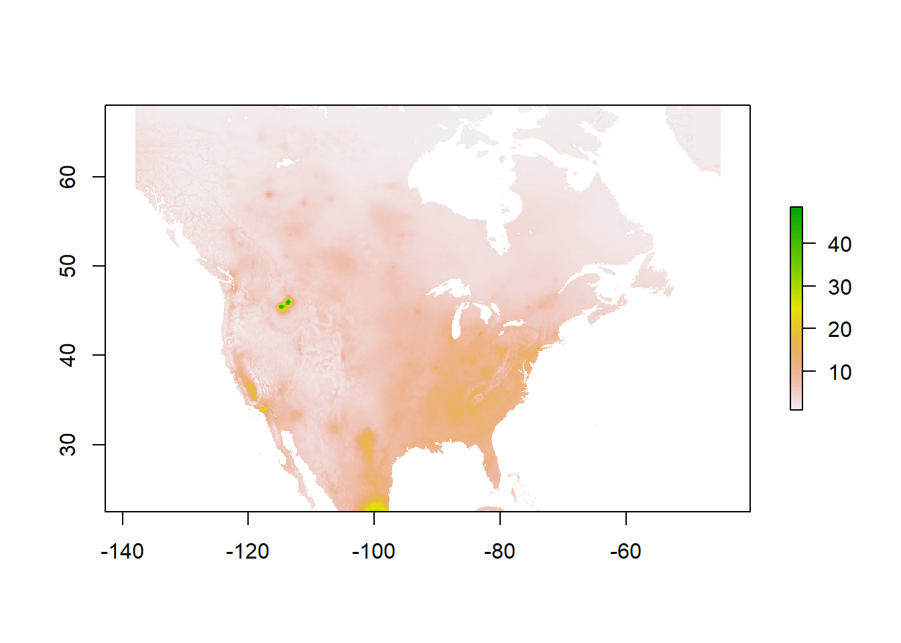

Data Library
Documentation format
Cleaned formats:
What:
Format:
Spatial Resolution + Coverage:
Temporal Resolution + Coverage:
Where:
When:
Data Files Structure
Not including the structure of the projects folder, since that
contains
ejlab
├── boundaries
│ └── lower 48
│ ├── lower48_bg2010_simplified
│ ├── lower48_tracts2022_simplified
│ └── lower48_tracts2022_ultra_simplified
├── pm25
│ └── pm[YYYY]_county2010.csv
├── rsei
│ ├── blockgroup
│ │ └── RSEI_blockgroup_year[YYYY]_consistent2011_lower48.csv
│ ├── county
│ │ └── RSEI_county_year[YYYY]_consistent2011_lower48.csv
│ └── tract
│ └── RSEI_tract_year[YYYY]_consistent2011_lower48.csv
|__eviction_lab_data
| |__block_groups_by_state
| | |_alabama_blocks.csv
| | |_alaska_blocks.csv (etc.)
| |__tracts_groups_by_state
| | |_alabama_tracts.csv
| | |_alaska_tracts.csv (etc.)
| |__cleaned_csv_datasets
| | |_blocks.csv
| | |_cities.csv
| | |_counties.csv
| | |_states.csv
| | |_tracts.csv
| |__cleaned_dta_datasets
| |_blocks.dta
| |_cities.dta
| |_counties.dta
| |_states.dta
| |_tracts.dta
|
├── raw
│ ├── boundaries
│ │ ├── blockgroups
│ │ │ └── 2010
│ │ │ │ └── tl_2010_[XX]_bg10 (where XX is state fips)
│ │ │ └── 2022
│ │ │ └── tl_2022_[XX]_bg (where XX is state fips)
│ │ ├── cb_2018_us_county_20m
│ │ ├── cb_2018_us_state_20m
│ │ ├── tl_2010_us_county10
│ │ ├── tl_2010_us_state10
│ │ ├── tl_2020_us_county
│ │ ├── tl_2020_us_state
│ │ └── tract
│ │ └── 2022
│ │ └── tl_2022_[XX]_tract (where XX is state fips)
│ ├── pm25
│ │ └── V4NA03
│ │ └── V4NA03_PM25_NA_[YYYY]01_[YYYY]12-RH35-NoNegs.asc (1988-2020)
│ └── rsei
│ │ ├── blockgroup
│ │ │ └── censusmicroblockgroup2020_[YYYY].csv
│ │ ├── chemical_data_rsei_v2310.csv
│ │ ├── facility_data_rsei_v2310.csv
│ │ └── zipcode
| |__eviction_lab_data
| | |_downloaded_data
| | | |_all.csv
| | | |_block_groups.csv
| | | |_cities.csv
| | | |_counties.csv
| | | |_national.csv
| | | |_states.csv
| | | |_tracts.csv
| | |_dta_of_downloaded_data
| | | |_all.dta
| | | |_block_groups.dta
| | | |_cities.dta
| | | |_counties.dta
| | | |_national.dta
| | | |_states.dta
| | | |_tracts.dta Environmental Data
RSEI
The Risk Screening Environmental Indicators (RSEI) is a measure of exposure to toxic chemicals from the EPA. The data helps “explore data on releases of toxic substances from industrial and federal facilities. RSEI incorporates information from the Toxics Release Inventory (TRI) on the amount of toxic chemicals released, together with factors such as the chemical’s fate and transport through the environment, each chemical’s relative toxicity, and potential human exposure.” Using the repoted chemical releases combined with the fate and transport models lets us know where people are exposed to those chemical releases.
raw/rsei/chemical_data_rsei_v2310.csv
Cleaned formats: NA
What: “The chemical table contains data [on which are] chemicals reported to TRI, including toxicity, physico-chemical properties, and flag fields to facilitate user selections. The chemical table is also available in EasyRSEI.” Data dictionary
Where: Download
When: 09/26/22
raw/rsei/facility_data_rsei_v2310.csv
Cleaned formats: NA
What: “The facility table contains data for reporting facilities, including location, stack parameters and discharge reach, and is also available in EasyRSEI.” Data dictionary
Where: Download
When: 09/26/22
raw/rsei/blockgroup
Cleaned formats: Processed versions of the RSEI data exist at the
blockgroup, tract, and county levels. Because of reporting requirements,
if you’re using RSEI in any timeseries you need to drop certain
observations so that there aren’t huge jumps in years where reporting
requirements change - currently data is only processed for the
consistent set of chemicals that exists starting in 2011. There is code
in the general_cleaning GitHub that would allow you to clean for other
year sets in case your year is prior to 2011. The data follows the
naming convention
RSEI_[geographic level]_year[AAAA]_consistent[BBBB]_lower48.csv, where
geographic level is either “blockgroup”, “tract” or “county”, AAAA
is the four digit year for which the RSEI data is pulled, and BBBB is
the four digit year that the chemicals are consistent for. BBBB should
never be a year that came after AAAA. Lower 48 indicates the data does
not include HI + AK or territories.
Blockgroup data:
## geoid toxconc
## 1 010010201001 421.9514
## 2 010010201002 336.7555
## 3 010010202001 382.7406
## 4 010010202002 506.1840
## 5 010010203001 430.1625
## 6 010010203002 568.2655Tract data:
## geoid toxconc
## 1 01001020100 373.7711
## 2 01001020200 430.2520
## 3 01001020300 468.3784
## 4 01001020400 506.8952
## 5 01001020500 525.0578
## 6 01001020600 925.0146County data:
## geoid toxconc
## 1 01001 361.0561
## 2 01003 5585.0642
## 3 01005 154.2646
## 4 01007 262.4001
## 5 01009 5077.8284
## 6 01011 243.6445What:
Format: csv. Each observation in the data is a spill of a specific chemical in a specific blockgroup, with accompanying information on the part of the spill relevant to the blockgroup. Important to consider that each row is NOT the entirety of a spill, NOT the entirety of the toxicity in the blockgroup and NOT the entirety of the impact of a facility, though you can aggregate to investigate spills, blockgroups or facilities. This documentation is helpful in thinking through what the data is and what is an appropriate interpretation.
Spatial Resolution + Coverage: Each observation is the impact at the blockgroup level, for all US blockgroups.
Temporal Resolution + Coverage: Each file is named
censusmicroblockgroup2020_[YYYY].csv, where the YYYY indicates the
year of coverage. It can only be interpreted at the year level, there’s
no way to break up further temporally.
Where: Download
When: Downloaded 10/9/2022.
PM 2.5
raw/pm25/V4NA03
Cleaned formats: Processed versions of the PM2.5 data exists at the
county level for 2000-2018. Currently, there is only a version for 2010
county boundaries. There is code in the general_cleaning GitHub that
could be adapted to clean for other shapefiles. The data follows the
naming convention pm[AAAA]_county[BBBB].csv, where AAAA is the four
digit year for which the pm data is pulled, and BBBB is the four digit
year that the county boundaries are from. All data from the V4NA03
dataset is for the lower 48, aka not including HI + AK or territories.
County data:
## fips pm25
## 1 01001 13.53732
## 2 01003 11.65764
## 3 01005 11.85669
## 4 01007 14.52235
## 5 01009 14.47244
## 6 01011 12.00997What:
Format: raster

Spatial Resolution + Coverage: The PM 2.5 data that lives in the Box
raw folder is in a raster format, one of the finest resolution
datasets (0.01° × 0.01°) built for PM 2.5. The data we have pre-loaded
is specifically for North America, and only covers the contiguous 48, if
you need Alaska and Hawaii, or international data you’ll need to
download their Global/Regional Estimates (V5.GL.02).
Temporal Resolution + Coverage: The PM 2.5 data that lives in Box currently covers 2018-2000 and is at a yearly average level.
Where: Information on the different products can be found
here. We have
V4.NA.03 data.
When: Downloaded 10/9/2022.
Social Data
Eviction Lab
What: Eviction lab data from the Eviction lab at Princeton University. A collection of cleaned geocoded, aggregated, set of court-ordered evictions that occurred between 2000 and 2016 in the United States. Consists of 82 million plus court records related to eviction cases.
Format of the data is in CSV as well as DTA formats.
Data is Geo coded down to the block group level, (also have tract level data), geocoding is done with fips codes
Sourcing The data is sourced by the Eviction lab by collecting eviction records (All landlord/tenant related cases) en masse from court clerks and by asking for bulk reports which provide a corpus of the court’s eviction case info such as names addresses, dates, and outcomes. FOIA (Freedom of Information Act) extends the right to access eviction records. Through these bulk requests, they obtained 12.9 million individual level court ordered eviction records. The eviction lab also purchased data sets of public eviction records from two companies, LexisNexis Risk Solutions and American Information Research Services Inc. They obtained about 66.5 million records from LexisNexis and 10.6 million records from AIRS.
Where: United States. Eviction lab’s own bulk requests were from all 50 states. LexisNexis included records from all states except North and South Dakota, AIRS provides eviction records from 6 states, Arizona, California, New Jersey, Nevada, Ohio and Oregon.
When: Data from year 2000 and 2016.
Cleaning
by Eviction Lab
Regular expressions were used to to match cases and names. (Levenshtein distance between pariwise combination was used as metric in matching).
Duplicate and non-meaningful records were removed.(perfect duplicates were dropped, and duplicates where all key variables such as full defendant name, street address, city, state, zip…etc were dropped. Serial cases, one landlord on the same tenant was identified and classified as one case)
Commercial defendants were removed (“commercial” if at least one defendant was identified as commercial entity, keywords such as Inc, Corporation, LLC, exclusion of 1.55%).
Date records were assigned using the earliest action on a case.
Standardized spelling and abbreviations.
Cleaned city names, state abbreviations, and zipcodes via comparison to standardized listings of city names and state abbreviations (fom Zip Codes To Go and Zip Code Tabulation Areas). Used MatchIt program in Stata to find best standardized match.
Geocoding was done by submitting the files to the Environmental Systems Research Institute. After address was assigned to latitude and longitude coordinates, the location could then be linked to other geographical area units such as Census tracts.
Estimation of prevalence: case outcome was classified as eviction if it contained a record of either money or forcible detainer judgement for plaintif. Case volume fluctuation across states (recorded evication data were not uniform across state and time, some areas where volume of cases collected was substantially lower than expected based on demographic variables state court-reported volume) were standardized by comparing data to eviction case volume statistics received directly from state and local courts.
To calculate eviction and filing rates, the number of evictions and filings were divided by the number of renter-occupied households in that area.
by Individual
Stata dofile of all the cleaning is located in box.
Stata versions of all files were created.Block-groups data was renamed blocks, both versions were stored.
blocks.dta was used, variable ‘parentlocation’ was split by comma, and the first part was renamed ‘county’ and second part renamed ‘state’. File was saved as DTA and CSV in the cleaned datasets section.
Cleaned blocks.dta was then broken down into individual states, and these datasets were stored in folder ‘Block Groups by State’.
tracts.dta was used in a similar way, the variable ‘parentlocation’ was also split into ‘county’ and ‘state’. then File was saved as DTA and CSV in the cleaned datasets section. It was also broken down into individual states, and stored in folder ‘Tracts by State’
The ‘cities’, ‘counties’, ‘states’ files in the downloaded data folder were modified, the ‘parentlocation’ variable was renamed state and the modified files were stored in the ‘Cleaned DTA Datasets’ as well as ’Cleaned CSV Datasets”
InfoUSA
Corelogic